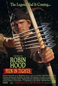
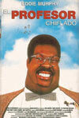
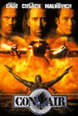
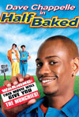
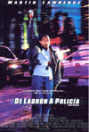
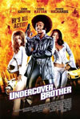
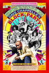

Filmografia
Sus creditos cinematograficos incluyen "Chi-Raq" de Spike Lee, "El hermano secreto", "Screwed", "De ladron a policia", "200 cigarrillos", "Tienes un e-mail", "Woo", "Medio flipado (Half Baked)", "Una rubia autentica", "Con Air (Convictos en el aire)", "El cuchitril de Joe", "El profesor chiflado", "Getting In", "Cuidado con la familia Blue" y "Las locas, locas aventuras de Robin Hood".
- 
Las locas, locas aventuras de Robin Hood
Es una película de 1993 dirigida por Mel Brooks, que retoma la fábula de Robin Hood en forma de comedia. Las bases de la leyenda se mantienen iguales, pero implementa nuevos elementos y personajes a fin de hacer una película al estilo humorístico del director parodiando las películas más famosas que se han hecho sobre este personaje, especialmente la versión protagonizada por Errol Flynn y la versión de 1991 con Kevin Costner.
- 
El Profesor chiflado
Una película estadounidense de comedia y ciencia ficción de 1996, dirigida por Tom Shadyac. Se trata de un remake de la película homónima de 1963 producida, escrita, dirigida y protagonizada por Jerry Lewis, que a su vez es una parodia de la novela El extraño caso del Dr. Jekyll y el Sr. Hyde de Robert Louis Stevenson.
-

Con Air
Una película de acción estadounidense de 1997 protagonizada por stron Nicolas Cage, John Cusack y John Malkovich. Fue escrita por Scott Rosenberg, producida por Jerry Bruckheimer y dirigida por Simon West. La película transcurre sobre un avión que transporta prisioneros, en el que no será un vuelo normal. Fue nominada en dos categorías para los premios Óscar, por Mejor canción y Mejor sonido.
-

Medio flipado
Una película de comedia de 1998 protagonizada por Dave Chappelle, Jim Breuer, Harland Williams y Guillermo Díaz. La película estuvo dirigida por Tamra Davis, y coescrita por la estrella Dave Chappelle y Neal Brennan.
-

Tienes un e-m@il
Una película perteneciente al género de la comedia romántica, dirigida por Nora Ephron y estrenada en 1998.
-

De ladron a policia
Película de comedia lanzada en septiembre de 1999 con Martin Lawrence y Luke Wilson. La película cuenta con un reparto adicional de Dave Chappelle, William Forsythe, Nicole Ari Parker, entre otros.
- 
El hermano encubierto
Anton Jackson es un agente muy especial, cuya obsesión es la ropa, la música y el cine de los 70. Inspirado por Shaft, Bootsy Collins y otros mitos de la blaxplotaiton, deberá dejar a un lado su peluca afro, las gafas de sol y los zapatos de plataforma para llevar a cabo esta misión: salvar a un candidato negro a la presidencia de los Estados Unidos. Su diavólico archi-enemigo, conocido simplemente como The Man , es el responsable de esto, junto con sus esbirros Mr. Feather y Penelope Snow.
-

Dave Chappelle's Block Party
Película documental de 2005 presentada y escrita por el comediante Dave Chappelle y dirigida por Michel Gondry.